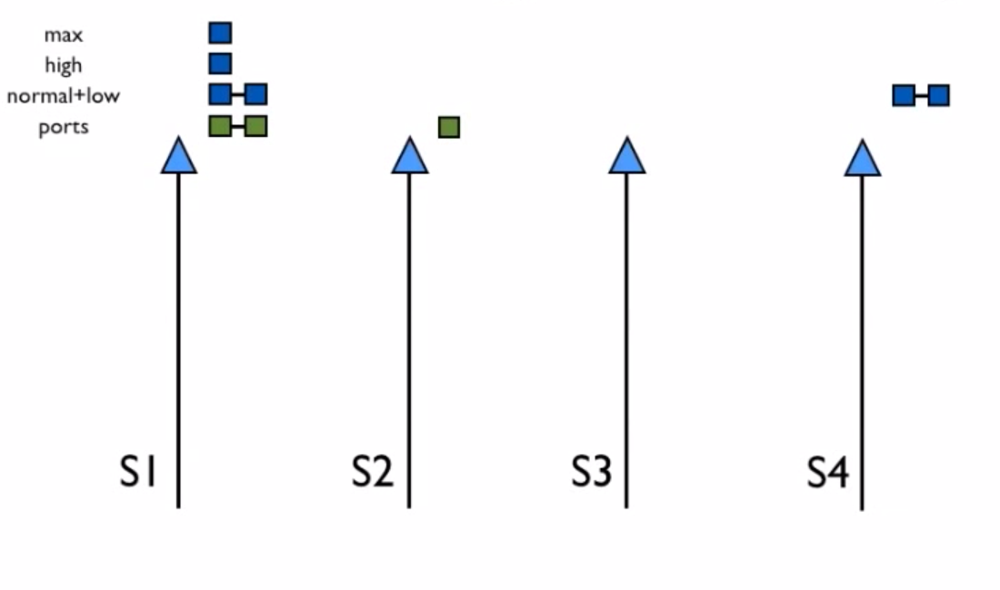
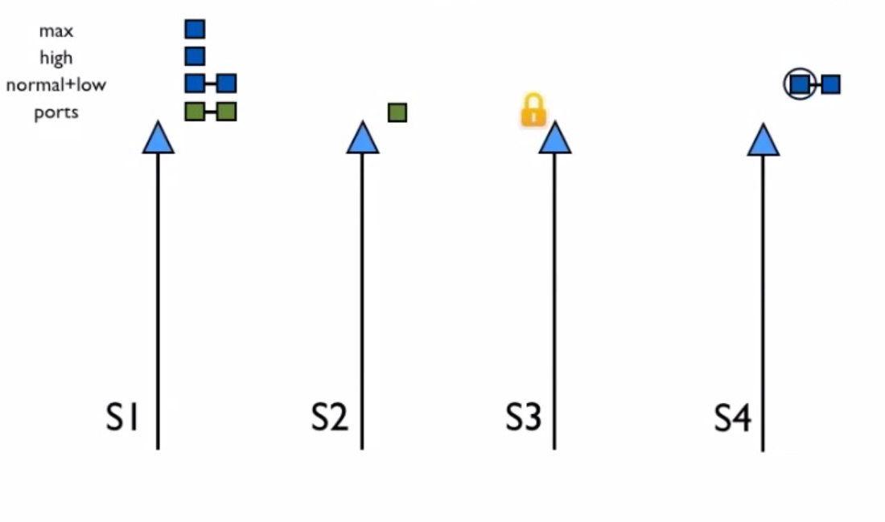
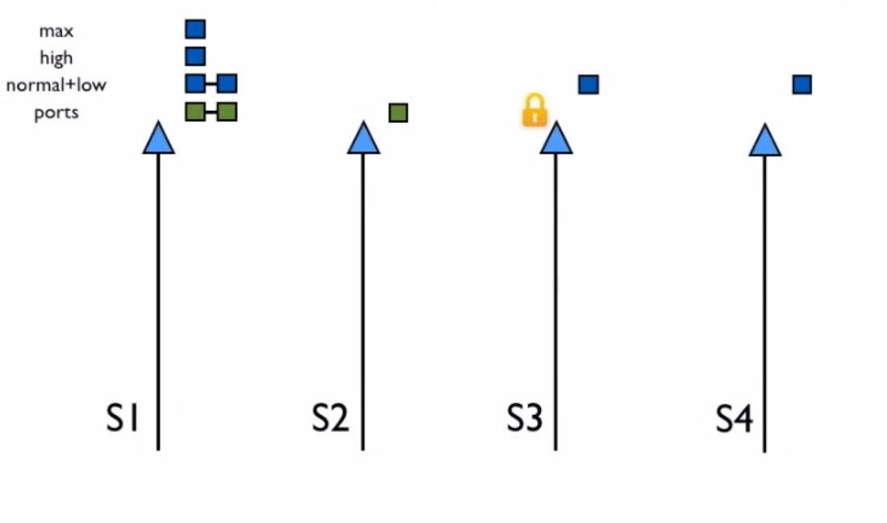

Поговорим о:
- Процессах
- Портах
- Сборщике мусора
- Планировщике
- Разном
Процесс
- Спавнится на том же планировщике
-
Прекращает исполнение, когда
- закончился бюджет редукций
- receive не может вернуть сообщение
- происходит bif trap
- занят вызываемый порт
- Вытесняется планировщиком
Процесс: код
Прямой шитый код
Порт
- Спавнится на том же планировщике
- Планируется не все активности
-
Прекращает исполнение, когда
- закончился бюджет редукций
- закончатся таски
- Не вытесняется планировщиком
Сборщик мусора
Когда стек и куча "встречаются"
Если не помогло, увеличиваем кучу
Сборщик мусора
Generational
Fullsweep
Планировщик
Один на поток
Своя собственная очередь запуска
Работает максимально независимо
Цикл планировщика
- Проверить таймеры
- (Возможно) проверить баланс загрузки
- Мигрировать процессы и порты
- Прочая работа
- (Возможно) проверить IO
- Выполнять 1 порт до истечения 2000 редукций
- Выполнять 1 процесс до истечения 2000 редукций
Балансировка
Не перегружать ядра
Сделать нагрузку как можно более компактной
Балансировка: Task stealing

Балансировка: Task stealing

Балансировка: Task stealing

Балансировка: Миграция
Task stealing плохо справляется с уплотнением загрузки
Пути миграции задач учитывают множество параметров
Пути периодически пересчитываются (20-40k редукций)
Хранится история последних 7 балансировок
Разное: Пул асинхронных потоков
Работают похожим образом на обычный планировщик
Нужны для долгих задач
Разное: Таймеры
Time wheel
Гарантия снизу
THE END
Спрашивайте свои ответы